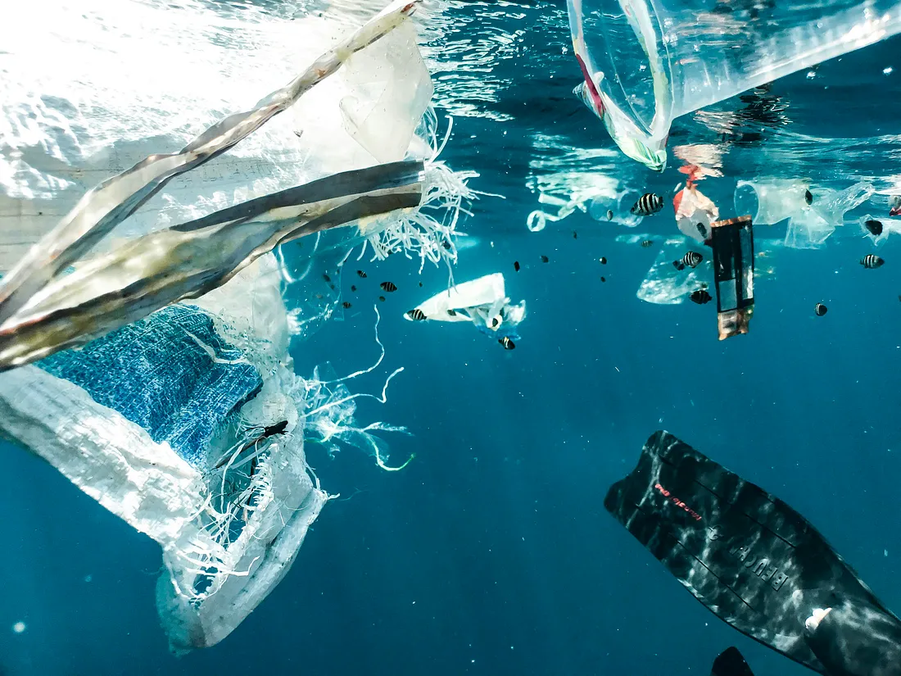

Solving the Microplastic Crisis
Hackathon project where my group and I developed Crustex, a sustainable solution to the rising numbers of microplastics found in synthetic clothing.

Overview
Hackathon project where my group and I developed Crustex, a sustainable solution to the rising numbers of microplastics found in synthetic clothing.
Received the Most Innovative Idea Award from TKS.
Problem
Synthetic clothing sheds microplastics that accumulate in ecosystems and water systems at rising rates.
Approach
Developed Crustex — a biosynthetic textile approach aimed at reducing microplastic pollution from clothing — during a TKS hackathon with my group.
My contribution
Co-developed the concept and research narrative; published the project research and programmed the project website.
Technical details
Biosynthetic textiles · materials research · sustainability systems thinking · product narrative and web presentation.
Impact
Received the Most Innovative Idea Award from TKS.
Future directions
Further materials validation and pathways from concept to prototype.